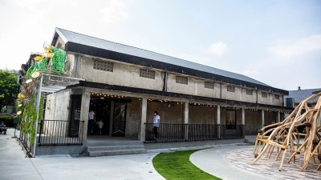
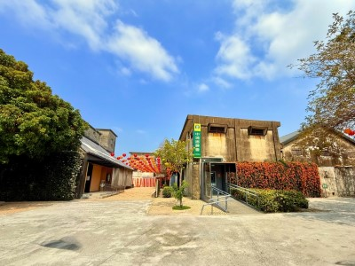

| 嘉義古堡景物 | |
| 嘉義中埔穀倉農創園區是由中埔鄉農會將擁有 60 多年歷史的廢棄穀倉活化轉型的複合式休閒園區。園區佔地約 3,300 多坪，保留了原始的清水模結構與舊時標語，並融入現代文創元素，是前往阿里山途中的熱門休息與拍照站點。 |  |
| 穀倉歷史 | |
嘉義中埔穀倉農創園區位於阿里山公路旁（台18線），前身為中埔鄉農會金蘭分部的16座舊穀倉，建於民國50-60年代。因農業轉型閒置多年，農會於2022年起將其活化為文創園區，保留原始灰白色水泥結構，結合「穰穰直賣所」、星巴克、美術館與藝術市集，成為熱門免門票景點。
|
 |
| 資料來源 | |